01
Drone Garage
A concept rendering of a drone garage setup, featuring a robotic arm, suspension rig, and charging dock, all illuminated by a single key light.
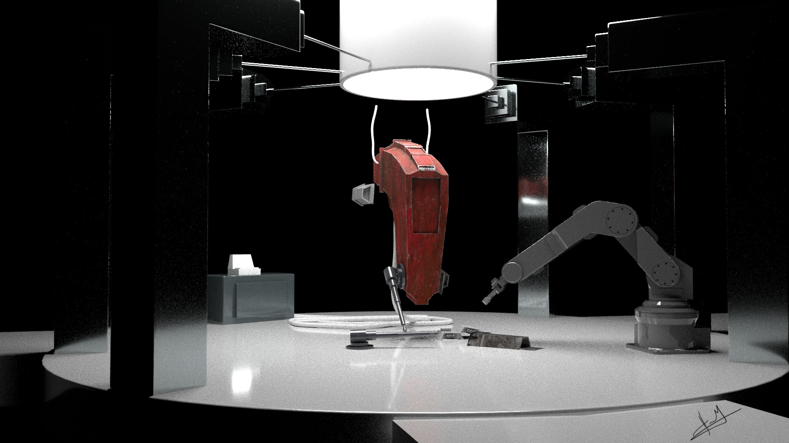
Modeling, PBR texturing and lighting in Maya, Substance Painter and Arnold. Real-time and offline pipelines, stylized and photoreal — production-ready assets with clean topology and clear stories.
Six selected projects, including modeling, look development, and lighting, span from fictional story concepts to architectural visualization.
A concept rendering of a drone garage setup, featuring a robotic arm, suspension rig, and charging dock, all illuminated by a single key light.

I experimented with the concept of a witch’s house, fog, moonlight, and reflections in still water to set the mood.
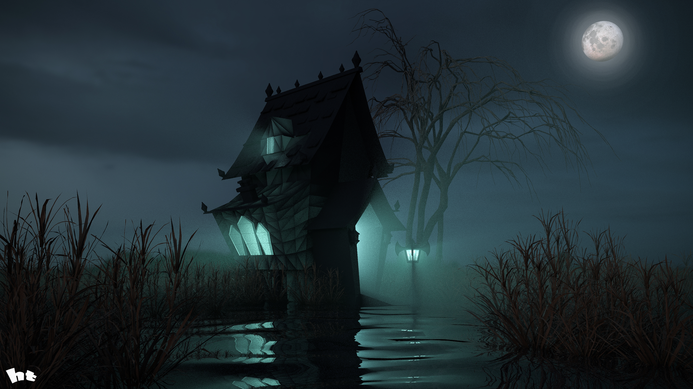
Rooted in the ancient yogic principle of Jal Tapas — a meditation practice performed in (and sometimes under) water. Sculpt, shade and a single beam of light through the surface.
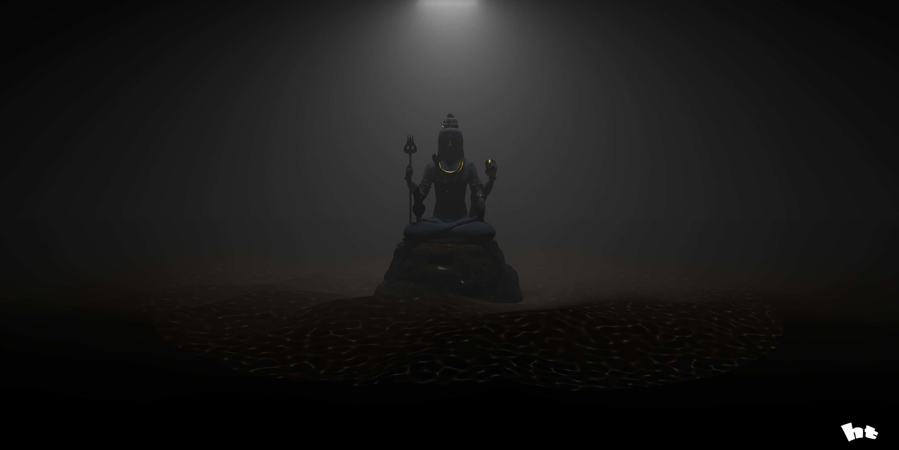
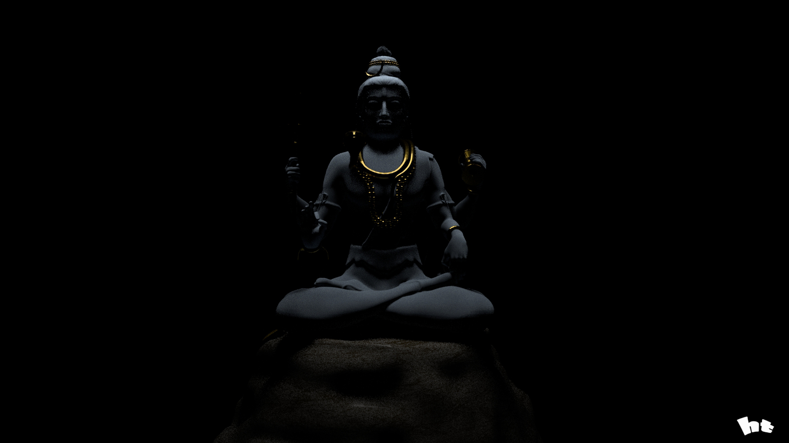
A concept robot design named "Cyber" pedestal lighting study with a warm rim and emissive eye slits, captured from three angles.
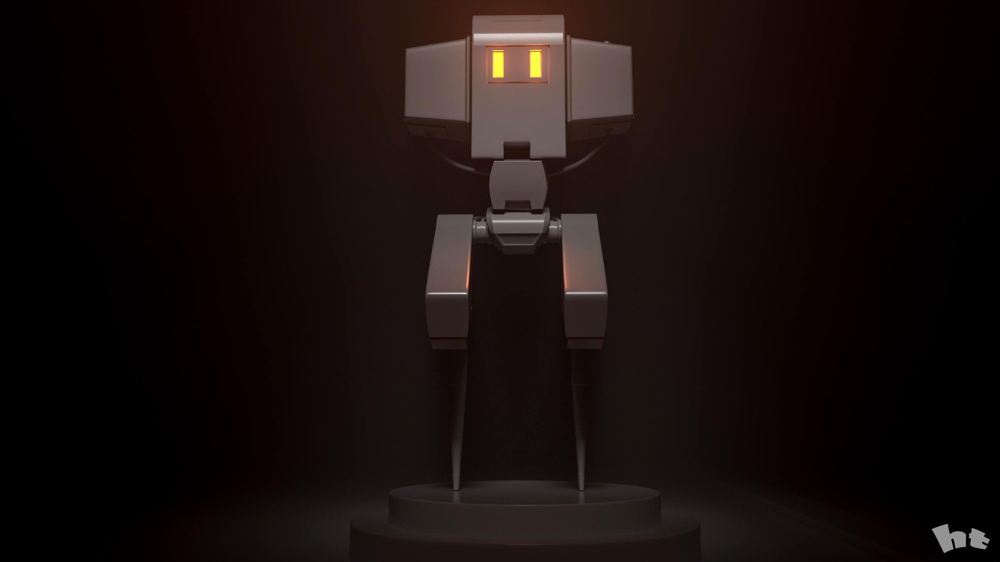
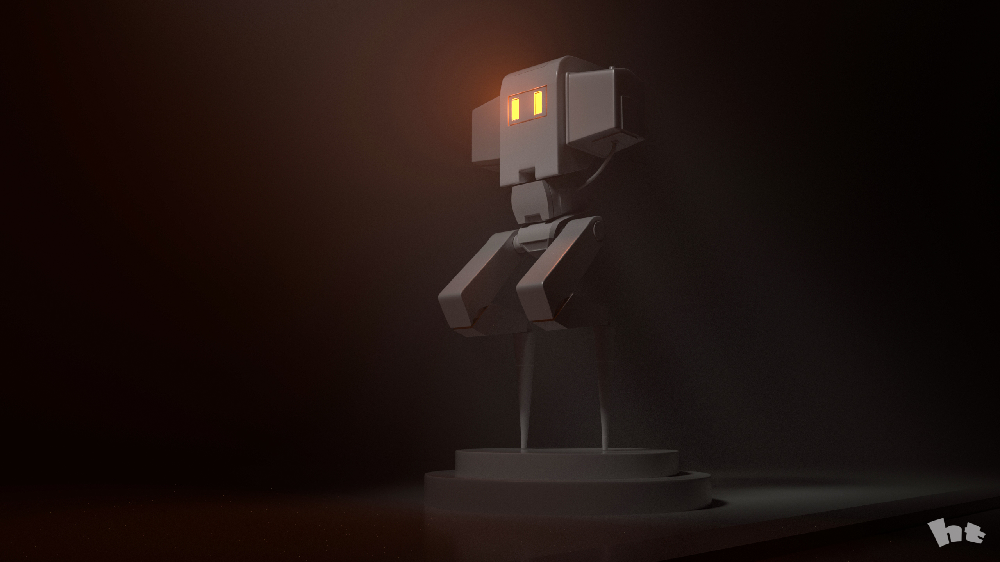
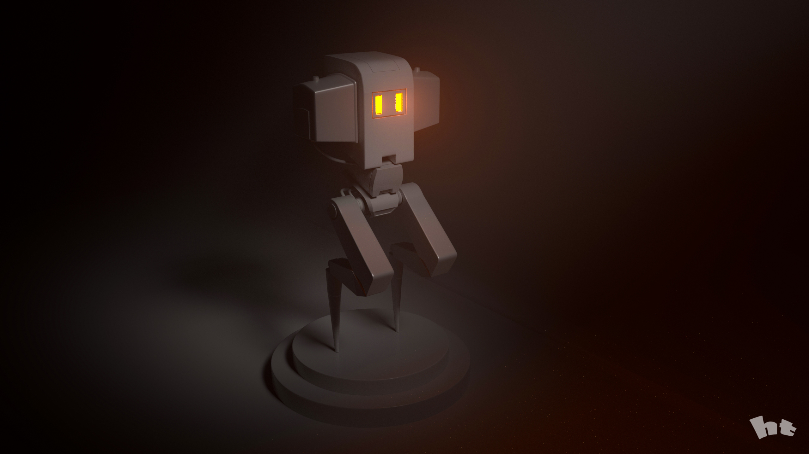
Freelance interior design projects include cutaway floor plans, mood-lit living rooms, and intimate dining spaces, all meticulously lit and rendered for client approval.
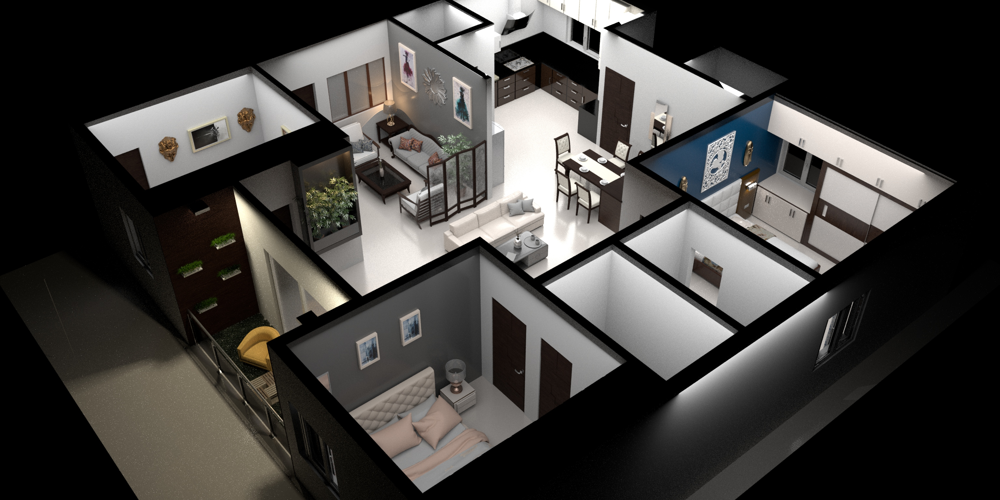
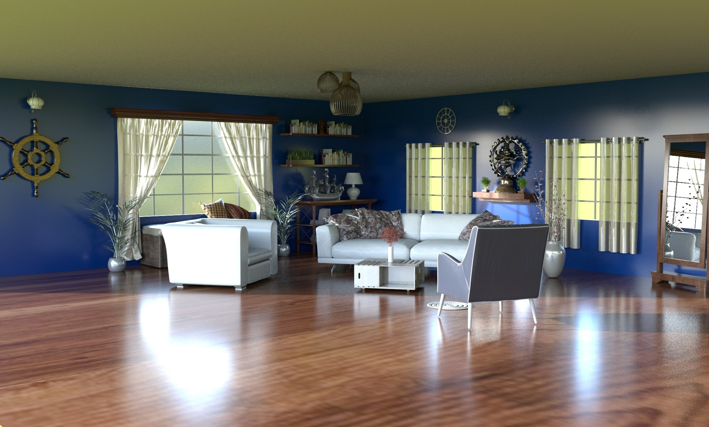
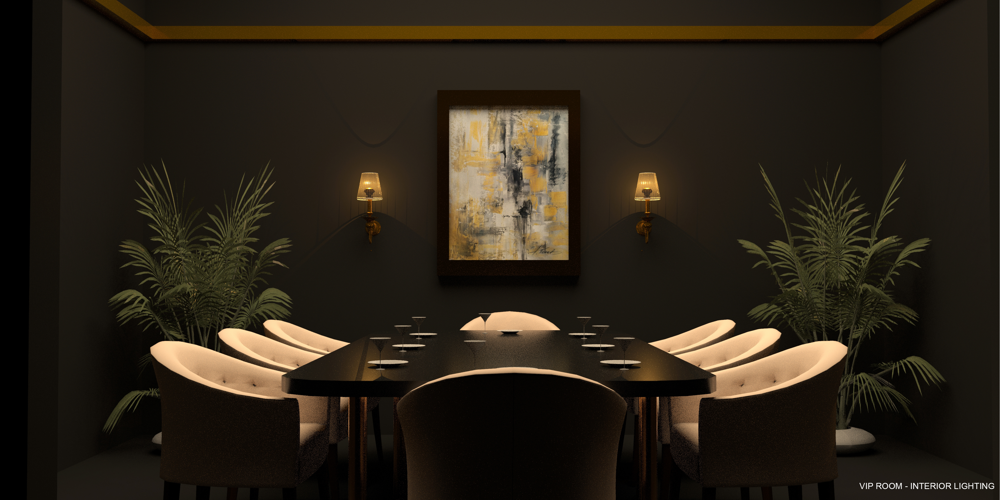
A real-time render of furniture, including a Womb chair, leather recliner, and office seating, has been baked and shaded for web XR.
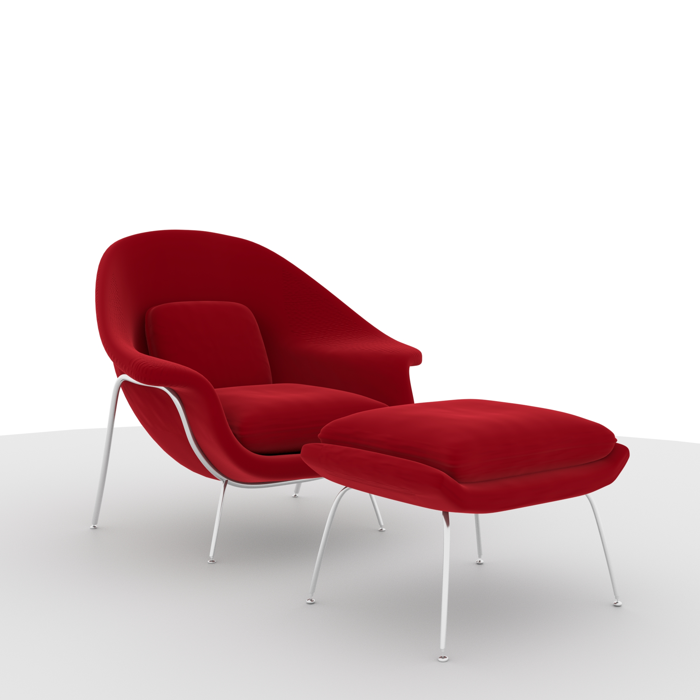
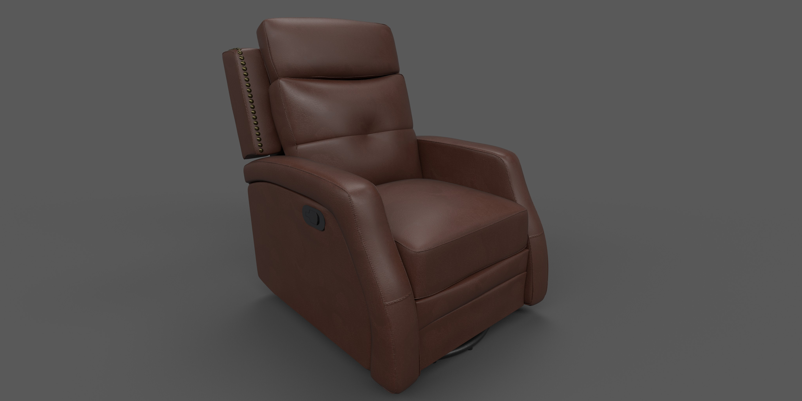
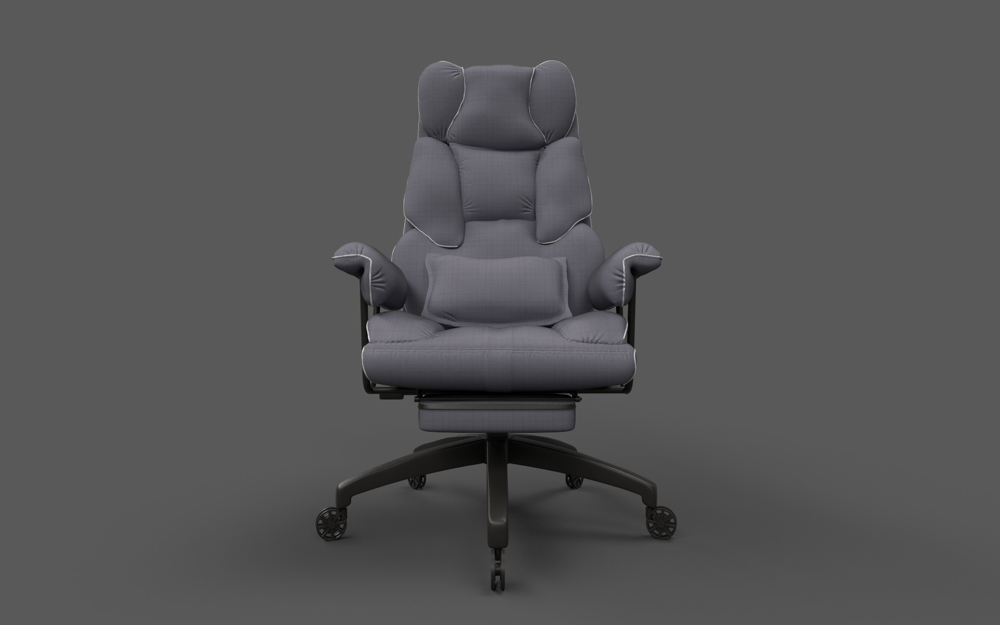